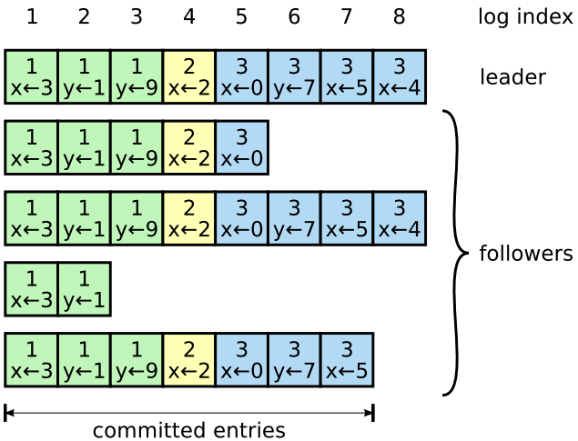

理解 Raft 协议
理解 Raft 协议
最近在学习mit 6.824课程，重新阅读了一些论文，拿本博客记录一下自己的学习。
大名鼎鼎的Paxos算法不少人都听说过，据说世界上有两种一致性算法，一种是Paxos算法，一类的Paxos算法变种。但由于Paxos的晦涩难懂和作者本人一样出名，也非常难以实习。斯坦福的两位教授（Diego Ongaro 和 John Ousterhout）设计了一个效果和Paxos相同但更易理解的算法，它就是Raft算法。想了解算法可以阅读原论文”In search of an Understandable Consensus Algorithm”，网上有原文和作者的讲解视频：In Search of an Understandable Consensus Algorithm。
Raft 算法概述
raft的首要目标就是容易理解（Understandable), 这从论文的标题就可以看出来。同时在保证这个大前提的下算法的可靠性、可用性和性能不输Paxos算法。
Raft more understandable than Paxos and also provides a better foundation for building practical systems.
为了达成这个这个目标，Raft主要做了两件事情：
- 问题分解
- 状态简化
问题分解是把一个主要问题分解成了若干个子问题包括: Leader election， log replication，safety，membership changes;而状态简化是把角色的状态简化为三个: Leader ，Follower，Candidate。
Raft相比Paxos有很多相似之处，但是有这么几个新特性：
- Strong leader：使用strong leader可以简化管理。例如log entries只从leader流向其他server.
- Leader election：使用randomized timer来简化选举过程。相比其他共识算法增加了heartbeat机制
- Membership changes：Raft变更服务器集群的使用了一种新的方法，保证了服务器的配置变更也能继续运行。
Leader election
相比Paxos复杂的角色划分，Raft算法只有三种角色分类：Follower、Candidate和Leader。所有的Server都会在这三种角色中相互转换，转换流程如下：
- 所有节点启动时都是follower状态；
- 在一段时间内如果没有收到来自leader的心跳，从follower切换到candidate，发起选举;
- 如果收到过半票（含自己的一票）则切换到leader状态；如果发现其他节点日志比自己更新，则主动切换到follower。
系统中最多只有一个Leader，如果在一段时间里发现没有Leader，则大家通过选举-投票选出Leader。Leader会不停的给follower发心跳消息，表明自己的存活状态。如果Leader故障，那么follower会转换成candidate，重新选出Leader。
Term
Term以选举（election）开始，然后就是一段或长或短的稳定工作期（Normal operation）。从上图可以看到，任期是递增的，这就充当了逻辑时钟的作用；另外，term 3展示了一种情况，就是说没有选举出leader就结束了，然后会发起新的选举，后面会解释这种split vote的情况。
选举启动条件
Follower在Election timeout内没有收到来自leader的心跳，（也许此时还没有选出leader，大家都在等；也许Leader炸了；也许只是leader与该follower之间网线被老鼠咬断了），则会主动发起选举。
步骤
- 增加节点本地的 current term ，切换到candidate状态
- 投自己一票
- 并行给其他节点发送 RequestVote RPCs
- 等待其他节点的回复
出现结果
- 收到majority的投票（含自己的一票），则赢得选举，成为leader
- 被告知别人已当选，那么自行切换到follower
- 一段时间内没有收到majority投票，则保持candidate状态，重新发出选举
投票限制
- 在任一任期内，单个节点最多只能投一票
- 候选人知道的信息不能比自己的少
- first-come-first-served 先来先得
若有三个节点A B C（上图）。A B同时发起选举，而A的选举消息先到达C，C给A投了一票，当B的消息到达C时，已经不能满足上面提到的第一个约束，即C不会给B投票，而A和B显然都不会给对方投票。A胜出之后，会给B,C发心跳消息，节点B发现节点A的term不低于自己的term，知道有已经有Leader了，于是转换成follower。
若没有任何节点获得过半投票，比如上图。则等待超时，引入randomized election timeouts和奇数个节点避免
Log replication
Replicated state machines
共识算法基于Replicated state machines来实现，即相同的初识状态 + 相同的输入 = 相同的结束状态
Leader将客户端请求（command）封装到一个个log entry，将这些log entries复制（replicate）到所有follower节点，然后大家按相同顺序应用（apply）log entry中的command，则最终状态肯定是一致的。
请求完整流程
leader append log entry
leader issue AppendEntries RPC in parallel
leader wait for majority response
leader apply entry to state machine
leader reply to client
leader notify follower apply log
由于是远程请求，各个节点的操作都经过RPC实现
Log matching
每个log entry不仅包含client的command还包含log entry的leader term，每个节点不要求完全一致，只求最终一致。未达到最终一致的时候，leader会不断尝试给follower发log entry，直到完全一致

由于server的连接可能出现问题，每个server的log entries都有可能不同，根据下图的情况可以进行分类做log matching:
- 出现follower的log index比master少或者term比当前term小，则进行额外的log commit
- log index大于当前index或者term高于当前log entries的，进行log删除
- log term小于或者不同于当前的term的，进行log覆盖
Safety
Raft通过上面几个属性保障在各类异常情况下仍然正常工作（数据中心被炸不算）
Log Compaction
由于Log只执行追加操作，而不进行删除和覆盖，Raft需要定期执行log compaction。snapshot可以分以下情况以提升性能。
定期做日志 snapshot，可使用copy-on-write技术
可以直接保留最新的log index和term
Leader执行AppendEntries RPC时，节点log entry落后太多也可以直接发送snapshot
总结
Raft 主要包括两个独立的子问题，Leader election和log replication。流程就是先选举出Leader，然后由Leader负责复制和提交log。
为了保证算法的safety属性，Raft对其子问题加上了诸多约束：
Election restriction：
- 每个任期的节点在进行投票都只能投一票，原则是先来先到
- 选举人的信息必须比自己了解的多(term, log replication)
Log replication
- 一个log可以被复制到大多数节点（committed），且不能被回滚；
- Leader 一定包含最新的committed log,因此log只会追加而不会覆盖删除；
- 不同节点，某个位置上日志相同，那么这个位置之前的所有日志一定是相同的；
- Raft 不能够提交上个任期的log entries。
本文是自己阅读论文和其他博客写的总结。不能全面，假如只是对Raft做一些基本了解。可以看这个演示动画帮助理解，假如想详细了解Raft算法还是需要阅读原文，阅读一下现有的Raft实现。